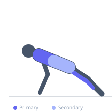
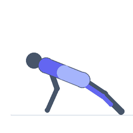

Exercise guide / Downward-Facing Dog
Downward-Facing Dog
Downward-facing dog is a foundational yoga posture that simultaneously stretches the hamstrings, calves, and latissimus dorsi while building shoulder stability and core engagement. With the hips raised into an inverted V shape and heels pressed toward the floor, the entire posterior chain is loaded in a lengthened position. It is used extensively as a transitional movement in yoga, as a warm-up for athletic activities, and as a standalone mobility exercise.
Primary muscles
biceps femoris long head
soleus
latissimus dorsi
Secondary muscles
gastrocnemius medial
erector spinae
Stabilizers
deltoid anterior
transverse abdominis
Equipment
No Equipment (Bodyweight)


Starting position
- Begin in a push-up or tabletop position with hands shoulder-width apart and feet hip-width apart.
Setup
- Use a mat to prevent hand and foot slipping.
Steps
- Step 1: Begin from a tabletop on hands and knees or a push-up position.
- Step 2: Press through the palms and lift the hips toward the ceiling, straightening the knees and forming an inverted V.
- Step 3: Press the heels toward the floor. They need not touch — a stretch in the calves and hamstrings should be felt.
- Step 4: Externally rotate the arms slightly so the elbow creases face forward.
- Step 5: Hold 30–60 seconds, pressing firmly through the hands and reaching the hips high.
Coaching cues
- Press the floor away with your hands
- Reach the tailbone toward the ceiling
- Press your heels toward the floor — imagine footprints on a mat
Breathing
- Breathe slowly and deeply. Exhale and press the hips higher. Inhale and settle into the position.
Range of motion
- The goal is a straight spine from hands to hips and heels as close to the floor as the posterior chain allows.
Tempo
- Hold 30–60 seconds. 2–4 rounds.
Common mistakes
- Rounding the upper back and collapsing the shoulder blades — press through the hands and spread them
- Not pressing the heels toward the floor — work toward this even if the calves are tight
- Bending the knees excessively, which reduces the hamstring and calf stretch
Safety
- Wrist discomfort is common — reduce by turning fingertips outward or using fists or push-up handles
- Shoulder injuries: consult a clinician before including overhead loaded positions
Training
- mobility: 2–4 reps
- mobility: 1–3 sets
- Rest: {'mobility': 15}